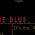

Dreamsheet: An Original, Multi-thread, Online Narrative
Background
Dreamsheet is a unique on-line narrative we produced for Microsoft Networks fall 96 lineup. The story, which can be accessed from multiple points-of-view, is "told" through high-quality original photography, a streaming audio-track and ambient MIDI music.
As new episodes are released, viewers are encouraged to share their experiences and discoveries with other users — building a sense of community and promoting intrigue and discovery.